ACIS
基础
ACIS 是一个几何模型内核。使用几何图形和拓扑表示物体形状，例如包含体 volumes, 独立面 stand-alone faces, 线框边 wire edges 的模型。它不作为最终的用户应用，而是为第三方应用提供几何模型建模功能的库。
Scheme AIDE
Scheme AIDE 过去作为 ACIS 3D 工具包被熟知，它为 Scheme 解释器提供了几何模型扩展。它不作为用户应用程序，而是使用 Scheme 语言执行大部分 ACIS 功能的机制。Scheme AIDE 易于扩展，可用于测试 ACIS 功能、原型软件。由于 Spatial 为客户提供 Scheme AIDE 源码，因此可用于示例代码，来演示如何在第三方应用中实现 ACIS 功能。
ENTITY
作为几何设计者，首先要定义模型结构以及可以对其进行的操作。可执行的操作包括
- 构建模型
- 删除模型或一部分
- 复制模型或一部分
- 保存到文件
- 读取保存到文件的模型
- 撤销或重做
- 调试操作
在 ACIS 中具有这些基本功能的基类是 ENTITY：所有表示模型的持续性几何和拓扑的类都继承自 ENTITY 。这些类具有这些基本功能，根据它们的具体细节进行实现。通常继承自 ENTITY 的类都是大写的，不过也有派生小写的类。
Tolerant ENTITY
有时，从其它几何建模系统中导入模型时，会出现几何不一致，因为原始系统使用与 ACIS 不同的容差 tolerances 。ACIS 通过 Tolerant ENTITY 来处理这种不一致：有容差顶点和容差边两种容差实体。
ACIS API
ACIS 中有两类函数：API 函数和直接接口函数。
API 函数
- 检查输入参数
- 包含异常处理代码，以防止内存泄漏
- 发生错误时回滚模型的更改
- 返回状态码，标记错误信息
- 以
api_开头
直接接口函数是较低级别的函数，通常不检查输入参数化，发生错误时回滚模型或返回状态码。包含异常处理代码。
附加数据
将应用程序中特定数据附加到 ACIS 模型的主要机制是将属性附加到 ENTITY，这种属性从 ATTRIB 类派生。后者也继承自 ENTITY 类。因此 ATTRIB 类具有比 ENTITY 类更多的功能。
ACIS 程序要素
一个 ACIS 程序需要包含 3 个要素：
- ACIS 许可软件
- 一个
api_start_modeller/api_stop_modeller块 - 一个
api_initialize<component>/api_terminate<component>块
创建程序
#include <iostream>
#include "acis.hxx"
#include "license.hxx"
#include "spa_unlock_result.hxx"
#include "YOUR_SPATIAL_LICENSE.h" //Replace with name of your license file
#include "kernapi.hxx"
const char* unlock_str = SPATIAL_LICENSE; //Defined in your license file
void unlock_spatial_products()
{
spa_unlock_products(unlock_str);
}
// The main program...
int main() {
// Start ACIS.
api_start_modeller(0);
// Call the licensing function to unlock ACIS.
// This can be done right after calling api_start_modeller().
unlock_spatial_products();
// Initialize all necessary add-on components (none in this example).
// Your application code goes here.
printf("Hello, ACIS World!\n");
// Terminate all necessary add-on components (none in this example).
// Stop ACIS and release any allocated memory.
api_stop_modeller();
return 0;
}
拓扑
ACIS 拓扑
边界表示模型的基本概念是拓扑描述元素如何连接。几何描述了每个独立元素的形状，而拓扑告诉我们它们之间的连接关系。例如边 \(E_1\) 以 \(V_1,V_2\) 为边界，边 \(E_2\) 以 \(V_2,V_3\) 为边界，那么 \(E_1,E_2\) 就相邻。
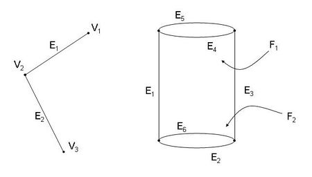
拓扑数据结构中的许多邻接关系通过遍历数据结构获得。
Bodies
Body 是一个或多个 Lump 的集合。大多数算法作用于 body，因此构造 ACIS 模型会创建 body 而不是独立的拓扑实体 entity 。body 通过继承自 ENTITY 的 BODY 类实现，其中包含指向 LUMP 的单向链表中第一个 LUMP 的指针。
Lumps
Lump 是连通点的集合。可以包含体 volumes, 片 sheets 或线框 wire 。对于体，Lump 包含边界和内部的点。对于 sheets 和 wires 没有内部，因此它们只包含边界点。Lump 类似于一块粘土。它可以是具有厚度的体，也可以将其挤成 sheet，也可以将其卷成 wire，也可以由它们共同组成。主要的约束是它们必须相连，例如下图是一个 lump：
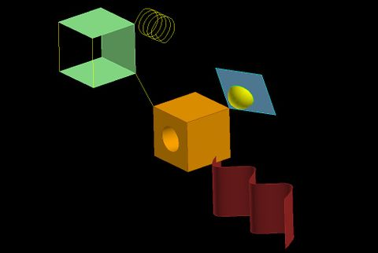
一个 body 中的 lumps 之间不应该连通。
- 对于拓扑结构设计，Lump 不是必要的。不过许多算法由于 Lump 变得更简单有效，并且接口函数也会更简单。
- Lump 通过继承自
ENTITY的LUMP类实现，每个LUMP包含指向拥有它的BODY的指针、指向下一个LUMP的指针，和指向SHELL的单向链表中第一个SHELL的指针。
Shells
Shell 是一组连通的边界元素。由于 sheet 和 wire 只有边界，因此其 lump 有唯一 shell 。而 solid 的每个 lump 可能有多个 shell 。例如下图是具有空洞 void 的体，作为一个 lump 具有内外两个 shell 。仅在这种情况下会出现具有多个 shell 的 lump 。
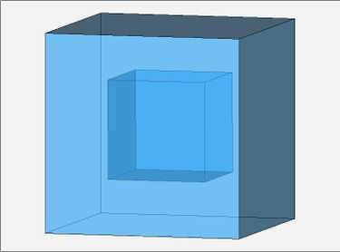
一个 lump 的 shells 之间不应该连通。
- 使用 shell 而不是 face 和 wire 可以表示内部空洞。如果没有 shell，那么一个实体中就不能有不连通的面。
- Shell 通过继承自
ENTITY的SHELL类实现，每个SHELL包含指向拥有它的LUMP的指针、指向下一个SHELL的指针，和指向FACE的单向链表中第一个FACE的指针，以及指向WIRE的单向链表中第一个WIRE的指针。也可能存在指向SUBSHELL的指针。
Subshells
在特殊情况下，一个 shell 会细分为 subshells，它包含一组连通的 face, wire 和 subshell 。与 shell 不同，subshell 之间可以相互连通，主要用于提高算法效率。例如算法需要作用在复杂模型中的一小部分时，可以构建 subshell 来排除其它部分。
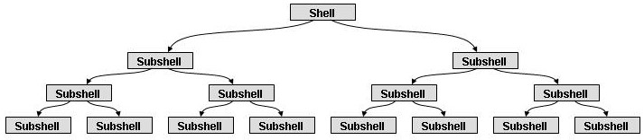
- Subshell 通过继承自
ENTITY的SUBSHELL类实现，每个SUBSHELL包含指向拥有它的SUBSHELL的指针、指向下一个SUBSHELL的指针，和指向FACE的单向链表中第一个FACE的指针，指向WIRE的单向链表中第一个WIRE的指针，指向SUBSHELL的指针。
Wires
Wire 是一组不是面边界的连通边。它可以开放、闭合、具有分支或回路。可以在体的内部或外部。如果在内部，可以作为穿过体的无穷小洞。下图是一个 wire，具有多个 edges 及其上的 coedges，还包含一个闭合回路。注意 coedge 和 edge 可能方向相反。
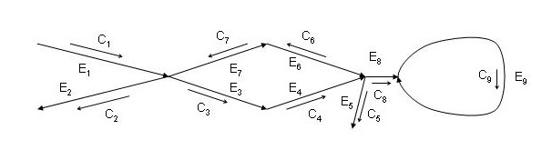
一个 shell 中的 wires 之间不应该连通，除非它们在面上的顶点处相连。当 wire 与 face 相交，就必须进行分割。例如下图是穿过实体，被两个面分割的三个 wires 。
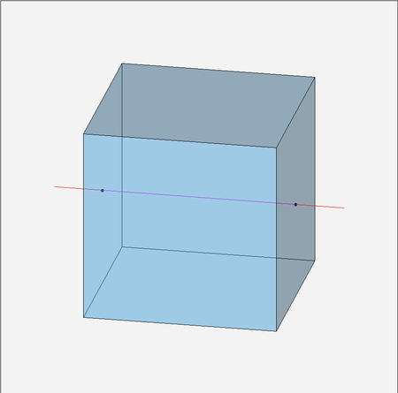
- Wire 通过继承自
ENTITY的WIRE类实现，每个WIRE包含指向拥有它的SHELL的指针、指向下一个WIRE的指针，和指向COEDGE的单向链表中第一个COEDGE的指针。
Faces
Face 是曲面上的有界区域。它允许我们使用更大表面的一小部分进行建模。
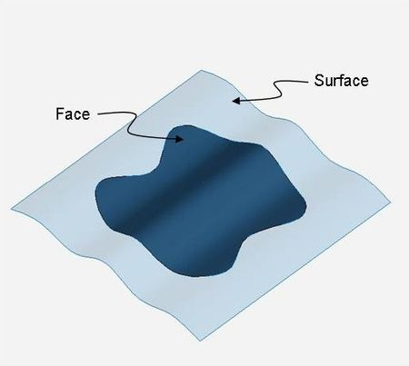
面可以是 sheet face，即作为实体区域的外部；或者绑定一个实体区域，从而将内外分开；或者嵌入实体。
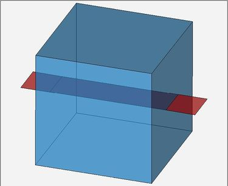
面可以具有 0、1 或更多 edges 的 loop 构成边界。例如球面或圆环面可以没有边界。Shell 的 faces 能且只能在边界处相互连接；两个相交 faces 必须存在边或顶点表示公共区域。
- Face 通过继承自
ENTITY的FACE类实现，每个FACE包含指向拥有它的SHELL的指针、指向下一个FACE的指针，和指向LOOP的单向链表中第一个LOOP的指针，以及指向底层SURFACE的指针。
ACIS 定义了 3 类 face：
- 作为 solid 边界的 face，它们将 solid 的内部与外部分离。face 的一侧 side 指向内部，另一侧指向外部。
- 被 solid 完全包含的 face，它们被称为嵌入 embedded 面或内部 internal 面。face 的两侧都指向内部。
- 位于 solid 外部的 face，被称为 sheet 或外部 external 面。face 的两侧都指向外部。
一个 face 的 sidedness 说明它是单侧还是双侧。单侧 single-sided 面在一侧有材质，另一侧没有。双侧 double-sided 面在两侧都是外部或都是内部。
Loops
Loop 由一个或多个 coedges 组成，用来标记 face 的边界。沿着 coedges 连接方向的左侧被保留。ACIS 将循环分为三种
- 外边界环路 peripheral loop
- 洞环路 hole loop
- 分离环路 separation loop
分离环路位于一个方向或两个方向都闭合的曲面上，例如圆柱的上下两个环路，在一个参数方向上闭合；圆环面可能在两个方向上闭合。
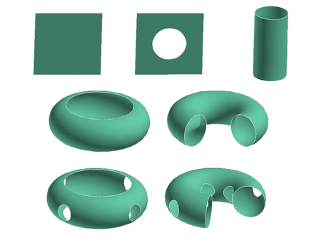
一个 face 的 loops 之间不应该连通，这意味着其中可能存在非流形区域，例如两个环在一点相接的情况。
- 使用 loop 而不是一系列 coedges 可以表示内部环。如果没有 loop，那么面中不能有两组不连接的 edges 。
- Loop 通过继承自
ENTITY的LOOP类实现，每个LOOP包含指向拥有它的FACE的指针、指向下一个LOOP的指针，和指向COEDGE的单向链表中第一个COEDGE的指针。
Coedges
Coedge 通过上层拓扑表示 edge 的使用。由于 coedge 的存在，ACIS 可以表示沿着 edge 的非流形。如果只使用 edge，那么在经典半边结构中一条边就只能被至多两个面使用，因此只能表示 2 流形。对于 wire 中 edge，每个 edge 有一个 coedge；如果一个 edge 被多个面使用，那么对每个面都有相应的 coedge 。一个 edge 被一个 face 使用两次有三种情况：
- spur edge 是未闭合且至少有一端自由顶点的边，可以存在于 wire 中，如下图左。
- prop edge 是未闭合且不是 spur edge 的边，如下图中。
- seam edge 是 prop edge 的特殊情况。如果 prop edge 沿着周期性曲面的参数化边界延伸，则称为 seam edge 。
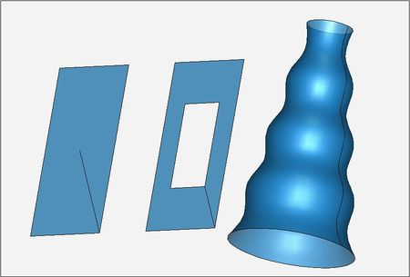
除了样条曲面上的 seam edge 外，其余的特殊边通常可以移除。
- Coedge 通过继承自
ENTITY的COEDGE类实现，每个COEDGE包含指向拥有它的LOOP或WIRE的指针、指向下一个和前一个COEDGE的指针、指向伙伴COEDGE的指针、指向EDGE的指针，有时还指向参数空间曲线PCURVE。
Edges
Edge 可以是 wire 的一部分，或者作为 face 的边界。
- 一个 edge 可以绑定多个 face，通过 coedge 控制 face 的边界，coedge 按照逆时针方向保存；因此可以得到关于 edge 的 face 的有序列表。
- 当 edge 在 wire 中，通常对应有一个 coedge；但是在布尔算法中使用的求交图中可能有多个 coedge 。沿着 coedge 可以获得相邻的 edge 。
Edge 具有方向，可以与它底层几何曲线方向相同或相反。由于定向，因此存在起点和终点，它们可能是同一个顶点。
- 如果 edge 有互异顶点，称为是 open；
- 如果 edge 顶点重合，称为 closed；
- 如果 edge 是 closed，且底层曲线在起点和终点的切向相同，则称为 periodic；
- 如果 edge 长度为零，则称为 degenerate，通常被认为是 NULL；如果它位于面上，则称为孤立顶点，例如两个球面相切时；
一个 face 或 wire 的 edges 可以互相连通。如果两个边相连，必须有描述公共点的顶点。
- Edge 通过继承自
ENTITY的EDGE类实现，每个EDGE包含指向拥有它的COEDGE的指针、指向起点和终点VERTEX的指针、指向空间曲线CURVE。
Vertices
Vertex 通常作为 edge 的边界。顶点可以作为许多边的边界：
- 在流形实体中，顶点指向其中一条边，其它边通过沿着链表搜索;
- 如果体在顶点处是非流形，例如下图所示，则顶点分别指向每个流形部分（Seperation Surface）中的一条边;
- 如果顶点同时作为 face 和 wire 中的边的端点，则它分别指向 face 和 wire 中的边； 这意味着，如果一个 wire 连接 face 的内部，则产生一个孤立顶点，它分别指向 wire 中的边和 face 上的 NULL 边；
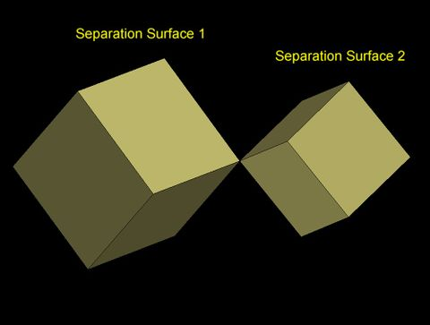
一个 face 或 wire 的 vertex 必须不相同，否则要合并为同一个。
- Vertex 通过继承自
ENTITY的VERTEX类实现，每个VERTEX包含指向拥有它的EDGE的指针以及指向空间点APOINT。
拓扑类
根据前面的介绍，我们可以整理继承自 ENTITY 的拓扑类 BODY, LUMP, SHELL, SUBSHELL, WIRE, FACE, LOOP, COEDGE, EDGE, VERTEX，它们都定义在 alltop.hxx 中。
流形和非流形
下图展示了几种特殊的非流形情况：
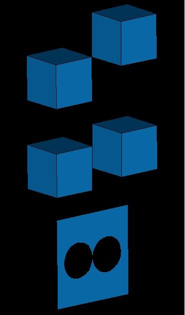
Solid 与 Sheet 拓扑
Solids 和 Sheets 的主要区别在于 face 的方向 sidedness 。如果 faces 作为 solid 的边界，那么在 face 的一侧被认为具有材质；如果 faces 插入在 solid 中，则两侧都有材质；如果 faces 在任何 solid 外，则两侧都没有材质。因此 solid 边界 face 必须具有相同的方向，例如 ACIS 规定 face 的法线应当远离具有材质的一侧。
Coedge 链表
正如前面介绍的，通过 coedge 组成的 loop 标记 face 的边界，其中 loop 左侧具有材质。每个 coedge 按照顺序与前后两个 coedge 连接，如下图所示。
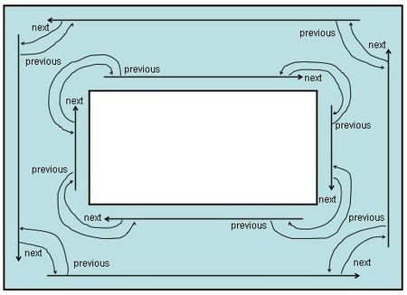
面上可能存在非流形顶点，如下图所示。此时 loop 由 4 个 coedge 组成，仍然可以沿着 loop 方向遍历。
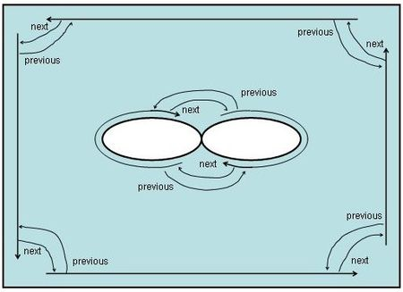
对于内部有一个孤立顶点的情况，如下图所示。此时 loop 包含一个 coedge，它的前一个和后一个 coedge 都是自身。
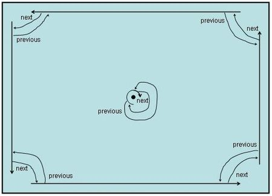
对于相邻面之间的 coedge，如下图所示 4 个面在一点相交，形成类似半边数据结构的图表。
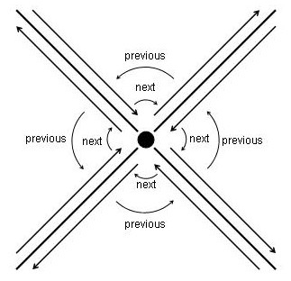
Coedge 伙伴
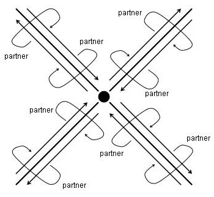
Wire 拓扑
每个 wire 指向其中的单个 coedge，每个 coedge 指向前后两个 coedge 。与 solids 和 sheets 不同，wire 中的 coedge 没有伙伴。Wire 中 coedge 的前后连接较为复杂，因为 coedge 可能在一个顶点处结束；同一个顶点可能有多条边；并且由于没有伙伴，因此必须在所有边之间建立连接，如下图所示：在顶点处结束的 coedge 的下一个指针指向自己。
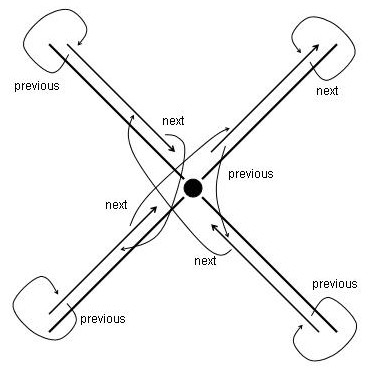
Wire 可以在 solid 或 sheet 的顶点处进行连接，例如下图中的 face 有一个闭合 edge 和 NULL edge 形成两个 loop，其中外边界环路包含一个 coedge，它的前后指向自己。Face 中间的非流形顶点指向两个 wire 上的 edge 以及 face 上的 NULL edge 。
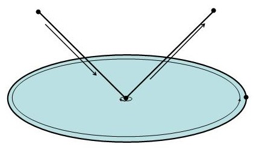
创建拓扑
在 wire 中前后指针不能是 NULL，伙伴一定是 NULL 。在 solid 或 sheet 中，如果 loop 不完整，即 face 部分有界，此时前后指针可能是 NULL；如果 edge 没有相邻的 face，伙伴可能是 NULL 。
可以使用如下 API 函数创建拓扑实体
| 描述 | 操作 | API Function |
|---|---|---|
| 通过 faces 创建 solid body | Stitch | api_stitch |
| 通过封闭 sheet 创建 solid body | Enclose | api_enclose_void |
| 通过 solid 创建 sheet | None | api_body_to_2d |
| 创建 solid 块 | None | api_make_cuboid |
| 扫掠面创建 solid 或 sheet | Sweep | api_sweep_with_options |
| 通过 edges 创建 face | CoverSweepSkinLoftNet | api_cover_wire, api_sweep_with_options, api_skin_wires, api_loft_coedges, api_net_wires |
| 创建 face 的偏移 | Face Offset | api_offset_face |
| 创建 body 的偏移 | Body Offset | api_offset_body |
| 移动 body 的 faces | Tweak | api_move_faces |
| 通过 edges 创建无分支的 wire | None | api_make_ewire |
| 通过 positions 创建无分支的 wire | None | api_make_wire |
| 创建无分支平面 wire 的偏移 | Wire Offset | api_offset_planar_wire |
| 创建多维 body；连接 solid 和 sheet；连接 solid 和 wire；连接 sheet 和 wire | Non-regularized Unite | api_boolean |
遍历 ACIS 拓扑
可以通过指针来遍历拓扑数据结构，例如 EDGE::coedge 方法返回 edge 上的第一个 coedge；也可以使用全局搜索函数，例如将 face 的指针传入 get_edges 函数，获得它边界上的 edge 的列表。
Body
| BODY method | Description |
|---|---|
BODY::owner() |
返回 NULL，因为 body 是顶层实体 |
BODY::lump() |
返回第一个 LUMP 指针 |
Lump
| LUMP method | Description |
|---|---|
LUMP::body() |
返回所属 BODY 指针 |
LUMP::owner() |
返回所属 BODY 指针 |
LUMP::next() |
返回所属 BODY 的下一个 LUMP 指针 |
LUMP::shell() |
返回第一个 SHELL 指针 |
Shell
| SHELL method | Description |
|---|---|
SHELL::lump() |
返回所属 LUMP 指针 |
SHELL::owner() |
返回所属 LUMP 指针 |
SHELL::next() |
返回所属 LUMP 的下一个 SHELL 指针 |
SHELL::face() |
返回 SHELL 中所有 FACE 列表中的第一个 FACE 指针 |
SHELL::face_list() |
返回直接属于此 SHELL 中 FACE 列表中的第一个 FACE 指针（考虑 SUBSHELL） |
SHELL::subshell() |
返回第一个 SUBSHELL 指针 |
SHELL::wire() |
返回 SHELL 中所有 WIRE 列表中的第一个 WIRE 指针 |
SHELL::wire_list() |
返回直接属于此 SHELL 中 WIRE 列表中的第一个 WIRE 指针（考虑 SUBSHELL） |
Subshell
| SUBSHELL method | Description |
|---|---|
SUBSHELL::parent() |
返回所属 SUBSHELL 指针 |
SUBSHELL::owner() |
返回所属 SUBSHELL 指针 |
SUBSHELL::sibling() |
返回所属 SHELL 或 SUBSHELL 的下一个 SUBSHELL 指针 |
SUBSHELL::child() |
返回直接属于此 SUBSHELL 的第一个 SUBSHELL 指针 |
SUBSHELL::face_list() |
返回直接属于此 SUBSHELL 的第一个 FACE 指针（考虑 SUBSHELL） |
SUBSHELL::wire_list() |
返回直接属于此 SUBSHELL 的第一个 WIRE 指针（考虑 SUBSHELL） |
Wire
| WIRE method | Description |
|---|---|
WIRE::shell() |
返回所属 SHELL 指针 |
WIRE::subshell() |
返回所属 SUBSHELL 指针 |
WIRE::owner() |
返回所属 SHELL 或 SUBSHELL 指针 |
WIRE::next() |
返回所属 SHELL 中所有 WIRE 列表中的下一个 WIRE 指针 |
WIRE::next_in_list() |
返回直接属于所属 SHELL 或 SUBSHELL 中 WIRE 列表中的下一个 WIRE 指针（考虑 SUBSHELL） |
WIRE::coedge() |
返回一个 COEDGE 指针 |
Face
| FACE method | Description |
|---|---|
FACE::shell() |
返回所属 SHELL 指针，不管是否是直接属于 |
FACE::subshell() |
返回所属 SUBSHELL 指针 |
FACE::owner() |
返回所属 SHELL 指针 |
FACE::next() |
返回所属 SHELL 中所有 FACE 列表中的下一个 FACE 指针 |
FACE::next_in_list() |
返回直接属于所属 SHELL 或 SUBSHELL 中 FACE 列表中的下一个 FACE 指针（考虑 SUBSHELL） |
FACE::loop() |
返回一个 LOOP 指针 |
Loop
| LOOP method | Description |
|---|---|
LOOP::face() |
返回所属 FACE 指针 |
LOOP::owner() |
返回所属 FACE 指针 |
LOOP::next() |
返回所属 FACE 的下一个 LOOP 指针 |
LOOP::start() |
返回一个 COEDGE 指针 |
Coedge
| COEDGE method | Description |
|---|---|
COEDGE::loop() |
返回所属 LOOP 指针 |
COEDGE::wire() |
返回所属 WIRE 指针 |
COEDGE::owner() |
返回所属 LOOP 或 WIRE 指针 |
COEDGE::next() |
返回所属 LOOP 或 WIRE 的下一个 COEDGE 指针 |
COEDGE::previous() |
返回所属 LOOP 或 WIRE 的前一个 COEDGE 指针 |
COEDGE::partner() |
返回所属 EDGE 的伙伴 COEDGE 指针 |
COEDGE::edge() |
返回所属 EDGE 指针 |
Edge
| EDGE method | Description |
|---|---|
EDGE::coedge() |
返回所属 COEDGE 指针 |
EDGE::owner() |
返回所属 COEDGE 指针 |
EDGE::end() |
返回终点 VERTEX 指针 |
EDGE::start() |
返回起点 VERTEX 指针 |
Vertex
| VERTEX method | Description |
|---|---|
VERTEX::count_edges() |
返回指向的所有 EDGE 的数量 |
VERTEX::edge() |
如果顶点是流形，返回所属 EDGE 指针；否则返回 NULL |
VERTEX::edge(int) |
返回指向的第 i 个 EDGE 指针 |
VERTEX::owner() |
返回所属 EDGE 指针 |
只要不使用 SUBSHELL，那么可以忽略相关的方法。主要使用的方法可以总结如下
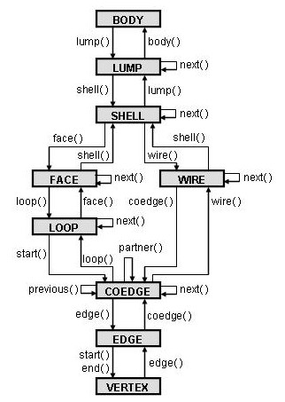
查找实体
所有继承自 ENTITY 的类具有 is_<entity_class_name>(const ENTITY*) 函数，返回给定 ENTITY 是否是这种类型。例如
ENTITY const *owner_ptr = ent;
// is_BODY 返回 owner_ptr 是否是 body 类型
while ( !is_BODY(owner_ptr) )
owner_ptr = owner_ptr->owner();
上述循环会向上层追溯拓扑类型，直到 owner_ptr 是 body 类型。这对 SUBSHELL 无效，因为它不一定有所属 SHELL 的指针。相对的，可以调用 get_owner(ENTITY*) 或 api_get_owner 获得顶层实体。
全局函数
存在直接接口函数和 API 函数。每个直接接口函数有一个 API 函数，反之亦然。通常在低层级应当使用更高效的直接接口函数；在高层级应当使用 API 函数。
直接接口函数声明在 get_top.hxx，对应的 API 函数声明在 kernapi.hxx 中。
| Direct Interface Functions | API Functions |
|---|---|
get_lumps(ENTITY*, ENTITY_LIST&, ...) |
api_get_lumps(ENTITY*, ENTITY_LIST&, ...) |
get_wires(ENTITY*, ENTITY_LIST&, ...) |
api_get_wires(ENTITY*, ENTITY_LIST&, ...) |
get_shells(ENTITY*, ENTITY_LIST&, ...) |
api_get_shells(ENTITY*, ENTITY_LIST&, ...) |
get_faces(ENTITY*, ENTITY_LIST&, ...) |
api_get_faces(ENTITY*, ENTITY_LIST&, ...) |
get_loops(ENTITY*, ENTITY_LIST&, ...) |
api_get_loops(ENTITY*, ENTITY_LIST&, ...) |
get_edges(ENTITY*, ENTITY_LIST&, ...) |
api_get_edges(ENTITY*, ENTITY_LIST&, ...) |
get_coedges(ENTITY*, ENTITY_LIST&, ...) |
api_get_coedges(ENTITY*, ENTITY_LIST&, ...) |
get_vertices(ENTITY*, ENTITY_LIST&, ...) |
api_get_vertices(ENTITY*, ENTITY_LIST&, ...) |
get_tedges(ENTITY*, ENTITY_LIST&, ...) |
api_get_tedges(ENTITY*, ENTITY_LIST&, ...) |
get_tcoedges(ENTITY*, ENTITY_LIST&, ...) |
api_get_tcoedges(ENTITY*, ENTITY_LIST&, ...) |
get_tvertices(ENTITY*, ENTITY_LIST&, ...) |
api_get_tvertices(ENTITY*, ENTITY_LIST&, ...) |
注意到没有 get_bodies 或 api_get_bodies 函数，因为通常任何拓扑实体都只有一个 body，而且找到 body 相对容易。上述函数都是接收一个给定拓扑实体，返回其包含或被包含的实体列表。最后三行的 TEDGE, TCOEDGE, TVERTEX 是容差实体。
实体列表类
容器类 ENTITY_LIST 定义在 lists.hxx 中，已经被高效优化，不是一个简单的链表。
- 当需要向列表中添加实体时，只有未被添加的实体会被添加。
- 如果一个实体被删除，列表仍然会保有该实体，因此最好时刻更新列表。
- 列表不参与历史回滚，如果有回滚需要，应该使用
EE_LIST。 - 如果需要包含其它类型，使用
VOID_LIST可包含任意类型。
拓扑类型
Face Types
使用 FACE::sides 返回 SINGLE_SIDED 或 DOUBLE_SIDED，前者表示它是 solid 边界；针对 DOUBLE_SIDED 面，使用 FACE::cont 返回 BOTH_INSIDE 或 BOTH_OUTSIDE，如果 face 是 sheet face，则两面都在外侧，没有材质，是 BOTH_OUTSIDE；如果 face 嵌入 solid 中，则是 BOTH_INSIDE 。
Wire Types
使用 WIRE::cont 返回 ALL_INSIDE 或 ALL_OUTSIDE，前者表示它嵌入 soild，后者表示在 solid 外侧。由于 wire 必须在相交处切断，因此只可能是两者之一。
Bounding Boxes
通常不会计算最小包围盒，因为计算宽松的包围盒更快。可以通过 api_get_entity_box 并传入 SPAboxing_options 获得。
数学类
这一部分我们介绍表示广义数学概念的 ACIS 类，例如位置、向量、包围盒。
SPAposition
3 维空间中的位置向量，定义在 position.hxx 中。
SPAvector
3 维空间中的位移向量，定义在 vector.hxx 中。
SPAunit_vector
3 维空间中的单位向量，继承自 SPAvector 类，定义在 unitvec.hxx 中。
SPAmatrix
3 x 3 仿射变换矩阵，不是张量，定义在 matrix.hxx 中。
通常直接使用
SPAtransf类，而SPAmatrix作为其内部的变换使用。
SPAtransf
3 维向量的一般变换。它以一个 4 x 3 矩阵乘齐次向量，专门储存来提高效率。可以作用于 3 维位置和向量，定义在 transf.hxx 中。
SPAparameter
曲线参数值，本质上是 double，但是为了一致性声明为类。它参与所有与 double 相关的操作，定义在 param.hxx 中。
SPApar_pos
曲面上参数空间中的位置。定义 \((u,v)\) 参数坐标，在曲面上求值时获得 3 维坐标。定义在 param.hxx 中。
SPApar_vec
曲面上参数空间中的向量 \((du,dv)\)，定义在 param.hxx 中。
SPApar_dir
曲面上参数空间中的方向向量 \((du,dv)\)，继承自 SPApar_vec 类，定义在 param.hxx 中。
SPAinterval
实轴上的区间，可以有界或无界，定义在 interval.hxx 中。
可以对区间取反，例如 \((1,2)\) 取反得到 \((-2,-1)\)，会交换上下界。
SPAbox
包围盒，用 3 个 SPAinterval 来表示，定义在 box.hxx 中。包围盒只在需要的时候计算，因为任何更改都可能使包围盒无效。
通过
get_box方法直接获得包围盒，而不是通过构造函数。ACIS 不保证包围盒是紧的，因此获得的包围盒可能远大于实体。
SPApar_box
曲面参数空间中的 2 维包围盒，定义在 param.hxx 中。
通过
surface::param_range或sg_get_face_par_box获得包围盒，而不是通过构造函数。
Math-related Macros
在 logical.h 中定义了 logical 类型，它是取两个值 TRUE 或 FALSE的整型。另外，在 base.hxx (被 acis.hxx 包含) 中定义了圆周率 M_PI 和它的一半 M_PI_2 。
几何
首先我们要区分持续 persistent 和非持续 non-persistent 物体。拓扑类继承自 ENTITY，因此被 ACIS 历史机制记录，因此是持续物体。然而几何类并不都是如此，有部分继承自 ENTITY，有部分则没有。其中，继承自 ENTITY 的类都是大写的，其余则是小写（也有例外）。成为模型一部分的物体继承自 ENTITY，而没有继承的类用来作为持续几何类的部分定义，可能作为构造几何。
ACIS 几何包括 4 类：
| Persistent Class | Non-Persistent Class | Description |
|---|---|---|
APOINT |
SPAposition |
3 维点 |
CURVE |
curve |
3 维曲线 |
SURFACE |
surface |
3 维曲面 |
PCURVE |
pcurve |
曲面 2 维参数域中的曲线 |
其中 CURVE, curve, SURFACE 和 surface 是抽象基类，其它都不是基类。使用 APOINT 和 SPAposition 是为了防止与第三方库命名冲突。
Points
3 维空间点用 SPAposition 表示，包括 \(x,y,z\) 三个值。在持续 ACIS 模型中 APOINT 是 VERTEX 的底层几何。每个 VERTEX 包含指向 APOINT 的指针，后者的几何定义保存在 SPAposition 中。没有表示 1,2 维点的持续类，因为 ACIS 建模不需要。
Curves
ACIS 中的 curve 和 CURVE 类实现了 curve 的概念。继承自 curve 的类不是持续的；而继承自 CURVE 的类是持续的。模型中的 EDGE 包含指向 CURVE 的指针。有几种不同的 CURVE，每种都有对应的 curve 类型。曲线可以是 open, closed, periodic，其中 periodic 意味着曲线在接缝 seam 处至少 \(G^1\) 连续。
ACIS 定义了 3 类解析曲线：直线、椭圆、螺旋线。它定义了 NURBS 曲线、相交曲线和复合曲线。
| Persistent Class | Non-Persistent Class | Description |
|---|---|---|
STRAIGHT |
straight |
直线 |
ELLIPSE |
ellipse |
椭圆线 |
HELIX |
helix |
螺旋线 |
INTCURVE |
intcurve |
NURBS 曲线、程序曲线（例如面面交线）或复合曲线 |
curve 底层类
curve 类定义了许多虚函数，包括
- 确定参数范围
- 确定类型 open, closed, periodic
- 确定参数值对应的位置、切向、曲率
- 确定曲线上点的参数值
- 确定给定点到曲线的垂足
- 确定到给定点最近的曲线点
- 确定给定点是否在曲线附近
- 确定两个参数值之间的曲线长度
特殊的曲线类型包括：
straight表示直线，总是 open 的ellipse表示椭圆曲线的一部分，可能是 open, closed, periodic 的helix表示一般螺旋线。特殊情况例如平面曲线。总是 open 的intcurve表示给定参数区间上的插值曲线，可能是 open, closed, periodic 的。它是对int_cur的封装
用户应当使用
curve和intcurve接口，而不是int_cur接口。
int_cur 是一个抽象基类，许多类都继承自它：
int_cur class |
Description |
|---|---|
exact_int_cur |
NURBS 曲线 |
par_int_cur |
参数空间曲线的 3 维像 |
int_int_cur |
两张曲面的交线 |
law_int_cur |
用户定义函数的曲线 |
off_int_cur |
给定两张曲面的偏移的交线 |
offset_int_cur |
曲线的偏移 |
off_surf_int_cur |
曲面上曲线沿着法向的偏移 |
para_silh_int_cur |
平行视图轮廓线 |
persp_silh_int_cur |
透视视图轮廓线 |
proj_int_cur |
曲线到曲面的垂直投影 |
spring_int_cur |
弹簧曲线 spring curve，即沿过渡曲面边缘的曲线 |
相关的其它类包括 bs3_curve，即 B 样条曲线。所有 int_cur 类包含
- 一个
bs3_curve通常是对int_cur的近似，但是在exact_int_cur的情况下精确。 - 可能包含指向两个曲面和两个
bs2_curve的指针，后者是曲线投影到对应曲面参数域上的曲线，在par_int_cur的情况下精确。
通常不需要直接创建 int_cur, bs3_curve, bs2_curve，而是通过创建 curve, CURVE, EDGE 的高级函数获得。例如创建基于 NURBS 曲线的 EDGE 使用 api_mk_ed_int_ctrlpts 函数。
CURVE 高层类
CURVE 用于 ACIS 模型结构，是 EDGE 的底层几何。有 4 种类型 STRAIGHT, ELLIPSE, HELIX, INTCURVE，每个类型都包含对应底层几何类的实例。
Surfaces
ACIS 中的 surface 和 SURFACE 类实现了 surface 的概念。继承自 surface 的类不是持续的；而继承自 SURFACE 的类是持续的。模型中的 FACE 包含指向 SURFACE 的指针。有几种不同的 SURFACE，每种都有对应的 surface 类型。曲面可以是 open, closed, periodic，其中 periodic 意味着曲面在接缝 seam 处至少 \(G^1\) 连续。
ACIS 定义了 4 类解析曲面：平面、锥面、球面、环面。它定义了 NURBS 曲面等各种程序曲面。
| Persistent Class | Non-Persistent Class | Description |
|---|---|---|
PLANE |
plane |
平面 |
CONE |
cone |
锥面 |
SPHERE |
sphere |
球面 |
TORUS |
torus |
环面 |
SPLINE |
spline |
NURBS 曲面或程序曲面 |
surface 底层类
surface 类定义了许多虚函数，包括
- 确定参数范围
- 确定类型 open, closed, periodic
- 确定参数值对应的位置、法向、曲率
- 确定曲面上点的参数值
- 确定给定点到曲面的垂足
- 确定给定点是否在曲面附近
特殊的曲线类型包括：
plane表示平面的部分，总是 open 的cone表示椭圆锥的部分，常用来表示柱面，可能是 open, closed, 在 \(v\) 方向 periodic 的。锥面在 \(u\) 方向是 open 的sphere表示球面的部分，可能是 open, closed, 在 \(v\) 方向 periodic 的torus表示环面的部分，非退化 torus 可能是 open, closed, periodic 的spline表示参数曲面，可能是 open, closed, periodic 的。它是对spl_sur的封装
用户应当使用
surface和spline接口，而不是spl_sur接口。
spl_sur 是一个抽象基类，许多类都继承自它：
spl_sur class |
Description |
|---|---|
exact_spl_sur |
NURBS 曲面 |
blend_spl_sur |
过渡曲面 |
ruled_spl_sur |
直纹面 ruled surface |
sum_spl_sur |
sum surface |
law_spl_sur |
用户定义函数的曲面 |
off_spl_sur |
曲面的偏移 |
rot_spl_sur |
旋转面 |
skin_spl_sur |
蒙皮面 |
net_spl_sur |
net surface |
sweep_spl_sur |
扫掠曲面 |
相关的其它类包括 bs3_surface，即 B 样条曲面。所有 spl_sur 类包含
- 一个
bs3_surface，通常它是对spl_sur的近似，但是在exact_spl_sur的情况下精确。
通常不需要直接创建 spl_sur, bs3_surface，而是通过创建 surface, SURFACE, FACE 的高级函数获得。例如创建基于 NURBS 曲面的 FACE 使用 api_mk_fa_spl_ctrlpts 函数。
SURFACE 高层类
SURFACE 用于 ACIS 模型结构，是 FACE 的底层几何。有 5 种类型 PLANE, CONE, SPHERE, TORUS, SPLINE，每个类型都包含对应底层几何类的实例。
Parameter-Space Curves (Pcurves)
如果一个 EDGE 位于 FACE 上，ACIS 可能包含该 EDGE 底层的 CURVE 在对应 FACE 底层 SURFACE 的参数空间上的表示。ACIS 要求参数空间表示只有如下情况
SURFACE是SPLINEEDGE是容差EDGE
其它情况下参数空间表示都可选。除了 par_int_cur 曲线和容差 edge 外，参数空间曲线是另一种表示，通过曲面和曲线生成。非持续的参数空间曲线类是 pcurve，相对的 PCURVE 是持续类。
pcurve 底层类
pcurve 是 par_cur 的封装。抽象基类 par_cur 派生出许多类：
| par_cur class | Description |
|---|---|
exp_par_cur |
显式参数空间曲线，由 surface 和 bs2_curve 定义 |
imp_par_cur |
隐式参数空间曲线，由 intcurve 底层的 surface 和 bs2_curve 之一定义 |
law_par_cur |
规则定义参数空间曲线 |
一个 bs2_curve 是 2 维 B 样条曲线，作为 par_cur 底层近似投影到参数空间的曲线。通常不需要直接创建 par_cur, bs2_curve，而是通过创建 pcurve, PCURVE 的高级函数获得。
PCURVE 高层类
PCURVE 是 COEDGE 的底层几何，只有当 COEDGE 位于 SPLINE 上或者容差 COEDGE 才需要 PCURVE 。没有任何类继承 PCURVE，不过有两种基本类型：包括通过 pcurve 的私有定义以及 intcurve 底层 surface 和 bs2_curve 的定义。这使得模型可以使用更少的显式定义。
相关函数
要创建或删除 PCURVE 使用
void sg_add_pcurve_to_coedge(COEDGE*, ...)
void sg_add_pcurves_to_entity(ENTITY*, ...)
void sg_rm_pcurves_from_entity(ENTITY*, ...)
删除必要的
PCURVE可能会损坏模型，需要慎重使用。
从 COEDGE 获得 PCURVE 使用
从 PCURVE 获得私有 pcurve 的拷贝、或者从 PCURVE 构造 pcurve 使用
获得 pcurve 或 FACE 在参数空间的包围盒使用
计算参数空间包围盒时，需要注意周期曲面或带有奇点的曲面可能不会给出与 sg_get_face_par_box 相同的结果，因为周期曲面参数空间中的 PCURVE 可能不封闭。
其它几何主题
连续性
ACIS 中许多算法在曲线或曲面光滑时更高效。建议具有 \(C^2\) 连续性，至少要有 \(G^1\) 连续。不连续信息记录在 intcurve, int_cur, spline, spl_sur 中。
Senses
Sence 信息使得物体具有与底层几何相同或相反的方向。例如 FACE 可能与底层 SURFACE 具有相同或相反的方向。如果在 FACE 上计算点的法向，可能需要翻转 SURFACE 法向的方向。使用 FACE::sense 返回 REVBIT 类型，取值 FORWARD 或 REVERSED，表明方向。
常用的 sence 函数如下
| Object | With Regards to Object | Sense-Determining Function |
|---|---|---|
FACE |
SURFACE |
REVBIT FACE::sense() |
spline |
spl_sur |
logical spline::reversed() |
COEDGE |
EDGE |
REVBIT COEDGE::sense() |
EDGE |
CURVE |
REVBIT EDGE::sense() |
intcurve |
int_cur |
logical intcurve::reversed() |
PCURVE |
bs2_curve |
int PCURVE::index() （如果 index 是 \(-1,-2\)，则 PCURVE 与 bs2_curve 反向） |
pcurve |
par_cur |
logical pcurve::reversed() |
下面展示了通过 sense 计算 COEDGE 上一点的过程
// 获得 edge 的参数范围
SPAinterval edge_range = my_coedge->edge()->param_range();
// 根据 coedge 的朝向来翻转参数区间
SPAinterval coedge_range = (my_coedge->sense() == FORWARD) ? edge_range : -edge_range;
// 对参数区间插值获得参数值
double coedge_param = coedge_range.interpolate(0.25);
// 根据 coedge, edge 的方向翻转参数值
double curve_param = (my_coedge->sense() == my_coedge->edge()->sense()) ?
coedge_param : -coedge_param;
// 计算参数值对应的点
SPAposition loc = my_coedge->edge()->geometry()->equation().eval_position(curve_param);
当然可以直接通过 coedge_param_pos 计算点，这是推荐的用法，因为上述代码没有正确地处理容差 coedge 。
周期曲面上的 Face
ACIS 可以表示各种开放、封闭或周期的面，例如下图中的圆台侧面。可以表示为两张开放曲面的并、带有接缝的一张曲面或无缝曲面。
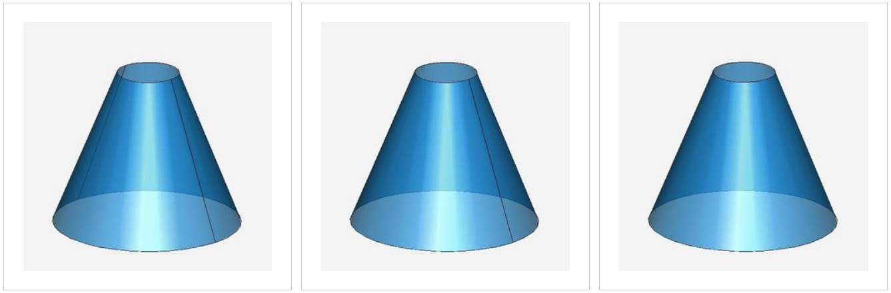
周期样条面上接缝的要求被 api_split_face 控制。周期面可以通过 api_split_periodic_faces 进行分割。使用选项 new_periodic_splitting 控制分割的数量和位置。
使用 subset
通常实体或算法只使用曲线或曲面的一部分，ACIS 允许 curve 或 surface 带有子集范围。子集通常比裁剪底层几何更推荐使用，因为它让多个子集之间的比较更高效。另外，子集几何比裁剪几何更快，尽管它不会减少几何实体所需的内存空间。
| Member Function | Description |
|---|---|
limit |
原地取 curve 或 surface 的子集 |
subset |
创建 curve 或 surface 的子集的拷贝 |
subsetted |
确定 curve 或 surface 是否被作为子集 |
unlimit |
从 curve 或 surface 中移除 subset range |
unsubset |
创建 curve 或 surface 的非子集的拷贝 |
param_range返回 curve 或 surface 的子参数区间。类似地，返回周期的函数都会考虑 subset 。因此要获得非子集的区间，需要先 unlimit 物体，操作之后重新 limit 物体。
参数范围的关系
几何和拓扑的参数范围之间要满足一定的关系。例如 FACE 的参数范围必须在其 SURFACE 的参数范围中。下图展示了一张 SURFACE 上的两个 FACE 实体。
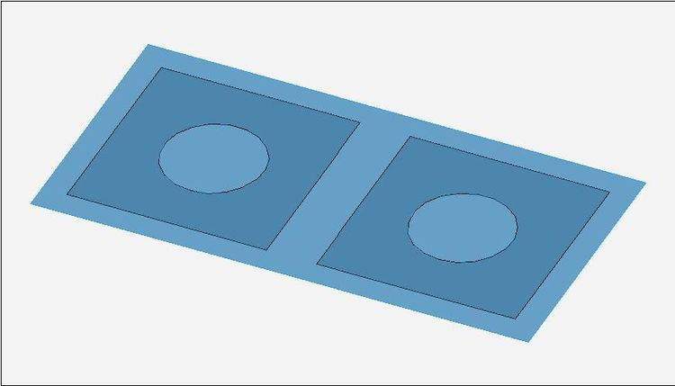
类似地，EDGE 的参数范围必须在其 CURVE 的参数范围中。下图是一条 CURVE 上的几个 EDGE 实体。
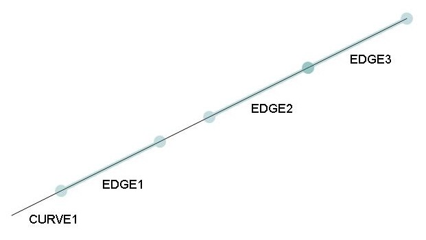
COEDGE 的参数范围必须在其 PCURVE 的参数范围中。此外，PCURVE 的参数范围要在底层 intcurve 或 bs2_curve 的参数范围中，其参数边界要在底层 SURFACE 的参数范围中。
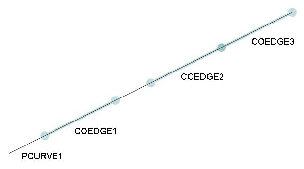
使用计数
ACIS 中许多物体类都共享，因此需要计数。在数据结构中共享物体可以减少模型的内存开销。使用计数的类如下
APOINTCURVESURFACEPCURVEint_curspl_surpar_cur
使用计数由 ACIS 程序自动管理，用户不需要进行操作。
变换
变换用于更改 ACIS 模型中对象的位置或方向。
- 如果平移或旋转移动很大的距离，则可能会导致数值精度的损失。
- 缩放也会导致几何问题：小的特征可能被放大，也可能被消灭。
- 反射会导致相对方向发生变化。
- 剪切会导致几何类型发生变化。
在 ACIS 中有两种使用变换的方式。变换可以附加到 BODY 并由后续操作使用，也可以将变换应用到 BODY 的子实体中的几何。这种方法可以将变换应用到整个 body 而不影响底层几何体。缺点在于任何几何求值都需要考虑到变换。
应用开发人员通过 TRANSFORM 和 SPAtransf 类实现变换，其中 TRANSFORM 类派生自 ENTITY，因此是 ACIS 持续性模型的一部分。每个 TRANSFORM 都包含一个 SPAtransf，其中包含变换的数学细节。下面是常用的变换函数
| Function | Description |
|---|---|
SPAtransf translate_transf(double x, double y, double z) |
创建表示平移的 SPAtransf 实例 |
SPAtransf rotate_transf(double angle, SPAvector const &axis) |
创建表示旋转的 SPAtransf 实例 |
SPAtransf scale_transf(double factor) |
创建表示伸缩的 SPAtransf 实例（非均匀伸缩或剪切通过 Space Warping 实现） |
SPAtransf reflect_transf(SPAvector const &normal) |
创建表示反射的 SPAtransf 实例 |
SPAtransf shear_transf(double xy, double xz, double yz) |
创建表示剪切的 SPAtransf 实例（通过 Space Warping 实现） |
SPAtransf const & SPAtransf::operator*=(SPAtransf const &) |
组合两个 SPAtransf |
SPAtransf SPAtransf::inverse() const |
创建给定 SPAtransf 的逆 |
api_apply_transf(BODY*, SPAtransf const &) |
创建并附加 TRANSFORM 到一个 BODY |
api_change_body_trans(BODY*, NULL,…) |
如果第二个参数 NULL，它会应用 TRANSFORM 到 BODY 中的所有几何，留下一个 NULL TRANSFORM 到 BODY |
转换为样条几何
可以使用 api_convert_to_spline 将 ACIS 解析曲线和曲面转换为 NURBS 几何。虽然解析曲线和曲面可以被 NURBS 精确表示，但是会有参数化变化。该选项由 new_periodic_splitting 由 split_periodic_splines 控制。
反之也有可能将 intcurve 和 spline 几何体转换为解析曲线和曲面，使用 api_simplify_entity(ENTITY*&, ...) 函数产生指定容差范围的近似，可能将非容差边的顶点变为容差边和顶点。
有效性检测
使用 api_check_entity 检查 ACIS 拓扑实体及子实体中的几何和拓扑的有效性。检查的规模由 check_level 选项控制。检查级别越高，执行的检查越多。建议每当从其它系统或之前版本的 ACIS 中导入模型时进行检查。
容差
全局容差
保持几何模型系统一致性的关键就在于对所有几何计算使用同一个容差。
ACIS 对大多数几何计算都是用同一个容差 SPAresabs，两个容差范围内的点被认为在同一个位置。那么如果两个点精确处于容差距离则会如何？事实上，只要保持一致就不需要担心。始终使用同一个比较方法，例如
或者使用
如果要使用 3 维模型空间容差比较 1 维或 2 维参数空间，那么应该先将其映射到 3 维模型空间，然后再进行比较。
要比较两个向量，应当使用 SPAresnor 容差，用来比较向量方向。如果两个向量在容差范围内，则认为它们平行。使用如下方法之一
parallel(SPAvector const&, SPAvector const&),
antiparallel(SPAvector const&, SPAvector const&),
biparallel(SPAvector const&, SPAvector const&),
或者使用
ACIS 的数学类不仅方便，并且提供了一致意义下的计算，使得应用更稳定。
为了确保一致性，我们使用的容差 SPAresnor 依赖 SPAresabs，根据模型的直径我们有
$$
longest\ dist = \frac{resabs}{resnor}
$$
因此如果我们有一对 SPAresnor 和 SPAresabs 容差，我们可以高效地设置模型中的最大距离。
B 样条近似使用容差 SPAresfit；还有另一个容差 SPAresmch，它比浮点精度高许多，在不同的机器上保持一致。现在我们可以总结所有的容差
| Tolerance type | Value |
|---|---|
SPAresabs |
1e-6 |
SPAresnor |
1e-10 |
SPAresfit |
1e-3 |
SPAresmch |
1e-11 |
选择单位
虽然 SPAresabs, SPAresnor, SPAresfit, SPAresmch 是变量，但是不建议修改它们。那么要如何表示模型中的尺寸？ACIS 没有单位，类似 meter 的单位需要自定义。
局部容差
ACIS 模型中的数据有时不符合 ACIS 的全局公差。这种情况通常发生在从其他系统导入模型时，但偶尔也会发生在 ACIS 建模操作期间。例如，可以创建两个实体，每个实体都符合 ACIS 全局公差，但其方向可能会使其组合不符合这些公差。两个实体上的面、边和顶点可能几乎重合，但并不完全重合。这种情况就需要使用容差实体。
- 如果
VERTEX在EDGE的容差范围内，却不在EDGE上，就可以表示为TVERTEX，它包含一个指定最大位置误差的局部容差。 - 类似地，如果
EDGE在FACE的容差范围内，却不在EDGE上，就可以表示为TEDGE。
如果算法遇到容差实体，就会使用局部容差而不是全局容差进行位置比较。有些算法会传播容差实体，例如对容差实体进行偏移就会得到新的容差实体。
为了针对容差实体进行比较，ACIS API 函数中具有进行位置比较的函数。例如比较两个 body 的 api_boolean 函数。如果只需要知道两个 body 是否相交，更建议使用 api_clash_bodies 函数。下面是常用的几何比较 API 函数：
| Function | Description |
|---|---|
api_boolean |
用来生成两个 body 的交 |
api_clash_bodies |
检查两个 BODY 是否冲突 clash，可选 clash 类型 |
api_clash_faces |
检查两个 FACE 是否冲突 clash，可选 clash 类型 |
api_edent_rel |
检查 EDGE 与另一个 ENTITY 的空间位置关系 |
api_edfa_int |
生成 EDGE 和 FACE 的交 |
api_entity_entity_distance |
确定两个 ENTITY 之间的最小距离 |
api_entity_point_distance |
确定点与 ENTITY 之间的距离 |
api_fafa_int |
生成两个 FACE 的交 |
api_find_cls_ptto_face |
确定 FACE 上到给定点最近的点 |
api_find_vertex |
确定 BODY 上到给定点最近的 VERTEX |
api_intersect |
生成两个 BODY 的交 |
api_intersect_curves |
确定两个 EDGE 或它们底层曲线的交 |
api_planar_slice |
生成平面和 BODY 交的 wire |
api_point_in_body |
确定点在 BODY 内部、外部或边界上 |
api_point_in_face |
确定点在 FACE 内部、外部或边界上（点被认为在 FACE 上） |
api_ptent_rel |
检查点与 ENTITY 的空间位置关系 |
如果要自己写代码进行比较，例如比较 SPAposition 与 EDGE 或 VERTEX，需要通过 get_tolerance 获得局部容差，与 SPAresabs 比较最大值。例如
如果比较两个 EDGE, VERTEX，则取
double tol = (vert1->get_tolerance( ) > vert2->get_tolerance( )) ?
vert1->get_tolerance( ) : vert2->get_tolerance( );
if (tol < SPAresabs)
tol = SPAresabs;
注意 TEDGE 一定有 TCOEDGE，而 TCOEDGE 只存在于 TEDGE 中。与 COEDGE 不同
TCOEDGE必须有PCURVETCOEDGE具有参数范围TCOEDGE具有参数空间盒TCOEDGE有对应的 3 维CURVE，表示PCURVE的像
在非容差实体中，我们假设在一条 EDGE 处相交的 FACE 精确相交，即底层曲面精确沿着单个曲线相交。而在容差实体中，FACE 的边界不需要精确沿着曲线。如果我们沿着一个具有容差边的面求值，那么会使用对应 TCOEDGE 而不是 TEDGE 的底层曲线和参数范围。例如
SPAinterval coedge_range = my_tcoedge->param_range( );
double coedge_param = coedge_range.interpolate(0.25);
SPAposition loc = my_tcoedge->get_3D_curve()->equation().eval_position(coedge_param);
注意到我们直接使用 COEDGE 的参数范围，而不是通过 COEDGE 获得 EDGE 的参数范围。对于非容差 COEDGE 只需要直接调用 coedge_param_pos 即可。
在 TEDGE 上的容差表示其底层 CURVE 与其 TCOEDGE 上的 CURVE 之间的最大距离；在 TVERTEX 上的容差表示其底层 APOINT 与被作为边界的 EDGE 或 TEDGE 末端的最大距离。
选项
全局选项
全局选项更类似于全局变量，它影响 ACIS 建模过程。某些选项只存在于 Scheme Aide 中，并不在 ACIS 库中。使用全局选项可以调整建模的表现，
- 例如
periodic_no_seam选项，设定周期 B 样条曲面是否要求接缝边。默认情况下设为TRUE表示不需要，此时周期 B 样条曲面可能由两个分离环路而不是外边界环路作为边界。 - 例如
merge选项，设置布尔运算和扫略运算后的表现。如果设为TRUE表示操作完成后得到的每一部分都会合并为一个拓扑。因此应该在有合并需要时开启选项，在无此需要时关闭选项。
选项值不仅可以是 logical，还可以是整型、字符串等其它类型。
用法
选项通过 option_header 类实现，开发时应该寻找特定的 option_header 使用其直接接口函数 find_option 。获得不同类型的值可使用
| 成员函数 | 返回值 |
|---|---|
option_header::on |
TRUE/FALSE |
option_header::count |
整型 |
option_header::value |
double |
option_header::string |
string |
可以使用 push/pop 将选项值推入栈，或者使用 set/reset 直接设置选项值，这样不会增加栈中的值。
下面展示了使用选项的代码，注意 pop 在 API_END 之后调用，确保值即使在出现异常后也能弹出。
option_header* merge_option = NULL;
API_BEGIN
merge_option = find_option("merge");
if (merge_option != NULL)
merge_option->push(FALSE);
// Perform your algorithm
API_END
if (merge_option != NULL)
merge_option->pop();
使用 set 时也是类似的
option_header* merge_option = NULL;
logical prev_merge_option_value;
API_BEGIN
merge_option = find_option("merge");
if (merge_option != NULL) {
prev_merge_option_value = merge_option.on();
merge_option->set(FALSE);
}
// Perform your algorithm
API_END
// 设置回初始值
if (merge_option != NULL)
merge_option->set(prev_merge_option_value);
如果要多次修改选项值，希望在结束 API_BEGIN/API_END 块以后恢复选项，这里使用的第二种风格比较有用。
如果初始值不是默认值，不能使用
reset来恢复。
类 option_header 在 option.hxx 中实现，不过有许多特定的选项已经在 ACIS 的某些组件中实例化。例如 Local Operations 组件，如果没有链接这个组件，就不能使用其中定义的选项。
API 函数
ACIS 也提供了修改选项的 API 函数
api_set_int_option— 修改 int 或 logical 值api_set_dbl_option— 修改 double 值api_set_str_option— 修改 char 值
内存管理
局部变量
局部变量的分配如下所示。该 SPAvector 类是通用向量类的 ACIS 实现，在 ACIS 中使用得相当广泛。
{
double value1 = 4.0;
double value2 = 2.5;
SPAvector vec1(value1, 0.0, 0.0);
SPAvector vec2(0.0, value2, 0.0);
SPAvector vec3 = vec1 * vec2; // The cross product
double dot_prod = vec1 % vec2; // The dot product
}
持续性变量
持续性变量在堆上创建。持续性变量的分配和取消通过使用宏来定向到 ACIS 内存管理系统。两个常用的宏是 ACIS_NEW 和 ACIS_DELETE 。下面每个使用 ACIS 的源文件都应包含 acis.hxx 头文件。包含此头文件的好处之一是包括内存分配和取消的所有宏的定义。
ENTITY 的构造和析构
大多数实体通过调用 API 和直接接口函数构建。如果需要构造从 ENTITY 派生出的类的实例，则需要使用 ACIS_NEW 进行构建
SPAposition my_loc(0.0, 0.0, 0.0);
APOINT * pt = ACIS_NEW APOINT(my_loc);
VERTEX * vert = ACIS_NEW VERTEX(pt);
由于 ENTITY 具有历史记录机制，因此通常不会取消内存分配；相反，调用 ENTITY 的 lose() 方法或更高级的函数。调用高级函数的目的是批量地对连接的多个实体同时调用 lose()，避免重复调用。
有两个相关的高级函数
| 接口 | 描述 |
|---|---|
| api_delent(ENTITY*,...) | 删除拓扑实体和所有子实体 |
| api_del_entity(ENTITY*,...) | 删除拓扑实体和所有连接的实体 |
这两个函数都不能修改应用程序中指向 lose 实体的指针，因此需要确保没有悬空指针。
SPAposition my_loc(0.0, 0.0, 0.0);
APOINT * my_pt = ACIS_NEW APOINT(my_loc);
VERTEX * my_vert = ACIS_NEW VERTEX(my_pt);
api_delent (my_vert); // Loses everything below my_vert
my_vert = NULL;
my_pt = NULL;
BODY * my_block = NULL;
api_make_cuboid (10.0, 10.0, 10.0, my_block);
FACE * my_face = my_block->lump()->shell()->face();
api_del_entity (my_face); // Loses everything connected to my_face
my_block = NULL;
my_face = NULL;
注意一般不需要对 ENTITY 实例进行析构。
非实体类的构造和析构
非 ENTITY 派生的对象实例应使用 ACIS_NEW 和 ACIS_DELETE 进行构造和析构。
标准类型的构造和析构
使用 ACIS_NEW 构造标准类型时会导致 ACIS 内存管理来处理内存分配。需要销毁时，应当使用
数组的构造和析构
动态数组的构造和析构方式根据不同类型使用不同的方式。
SPAposition * pos_array = ACIS_NEW SPAposition[NUM_LOCS];
ACIS_DELETE [] pos_array;
int * i_array = ACIS_NEW int[NUM_INTS];
ACIS_DELETE [ ] STD_CAST i_array;
静态变量
由于在构造静态对象时尚未初始化 ACIS 内存管理系统，因此不应将 ACIS 类的实例创建为静态变量。
属性
在实际开发中，通常需要将一些程序信息与 ACIS 数据连接，这当然可以通过继承 ACIS 类实现，但是通常会比较困难。这一部分我们讨论将信息附加到现有类的方法。
基本介绍
属性 attribute 是特殊类型的实体，用来给实体附加数据。我们将
- 简单数据类型（整型、浮点、字符串等）称为简单 simple 属性；
- 将指向
ENTITY的属性称为复杂 complex 属性； - 包含或指向更复杂数据类型（网格、纹理映射等）的属性称为桥梁 bridge 属性；
- 控制 ACIS 算法的属性（桥接算法使用指定桥接边和数量的属性）称为指令 instruction 属性，由系统定义；
- 一般 generic 属性是预定义的属性；
- 组织 organization 属性是作为其它特定属性基类的属性；
属性通过 ATTRIB 类实现，继承自 ENTITY 类。ATTRIB 提供指向被附加的 ENTITY 的指针，该 ENTITY 称为 ATTRIB 的 owner 。每个 ENTITY 也由指向 ATTRIB 的指针。每个 ATTRIB 都包含指向前后的指针，形成链表。
- 使用
find_attrib(ENTITY*,...)查找ENTITY中的特定ATTRIB，它返回实体中第一个相同类型的属性。 - 使用
find_next_attrib(ATTRIB*,...)查找下一个相同类型的属性。
上述方法都需要指定特定的类型。ATTRIB 也包含成员函数和数据用于所属实体操作，例如指定复制实体时对应 ATTRIB 发生的变化。
类继承
下图展示了属性类的继承关系：其中阴影部分由 ACIS 定义，其它部分需要自定义
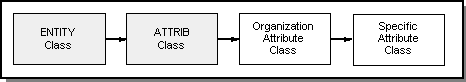
属性类会派生出组织属性类，例如系统定义的 ATTRIB_SYS, ATTRIB_CT, ATTRIB_ST 属性。用户定义的属性继承自自定义组织属性类。
一般属性
一般属性在 ACIS 中定义，其基类为 ATTRIB_GENERIC，继承自 ATTRIB 。它不提供 ATTRIB 中以外的任何附加成员数据或函数。派生类 ATTRIB_GEN_NAME 提供名称字符串以及 owner 被分割、合并、平移或拷贝后对应的操作。并且它派生出 8 个类
ATTRIB_GEN_POINTER包含ENTITY指针ATTRIB_GEN_ENTITY包含所属ENTITY的指针ATTRIB_GEN_INTEGER包含 intATTRIB_GEN_REAL包含 doubleATTRIB_GEN_POSITION包含SPApositionATTRIB_GEN_VECTOR包含SPAvectorATTRIB_GEN_STRING包含字符串ATTRIB_GEN_WSTRING包含宽字符串
例如我们用到 BODY 的质心，就可以创建 ATTRIB_GEN_POSITION 来保存质心，保存 center of mass 字符串，然后附加到 BODY 上。随着 BODY 的修改，需要动态调整其值或将其设为无效（在 ACIS 中一个缓存值可被标记为无效，避免重新计算）。
Owner 的修改
为了在 owner 被修改后调整属性值，ATTRIB 类定义了一系列虚函数，包含应用指定的控制行为的代码。
| Member Function | Description |
|---|---|
copy_owner |
指定 owner 被拷贝后的行为，默认什么都不做。 |
from_tolerant_owner |
指定 owner 被非容差实体替换，然后被删除时，属性的行为。默认如果属性可移动，则会移动到新的实体中。 |
lop_change_owner |
指定 owner 被局部操作修改后的行为，默认什么都不做。 |
merge_owner |
指定 owner 与其它实体合并后的行为，默认什么都不做。 |
replace_owner |
指定 owner 被其它实体替换后的行为，默认什么都不做。 |
replace_owner_geometry |
指定 owner 的几何被替换后的行为，默认什么都不做。 |
reverse_owner |
指定 owner 的 sense 被反转后的行为，默认什么都不做。 |
split_owner |
指定 owner 被分割为两个实体后的行为，默认什么都不做。 |
to_tolerant_owner |
指定 owner 被容差实体替换，然后被删除时，属性的行为。默认如果属性可移动，则会移动到新的实体中。 |
trans_owner |
指定 owner 被变换后的行为，默认什么都不做。 |
warp_owner |
指定 owner 被扭曲后的行为，默认什么都不做。 |
如果不想实现上述函数，也可以使用下面预定义的行为。其中每个函数都接收一个枚举，在 Attribute Notification Methods 中列举。
| Member Function | Description |
|---|---|
set_copy_owner_action(const copy_action) |
指定 owner 被拷贝后的行为 |
set_from_tolerant_owner_action(const tolerant_action) |
指定 owner 被非容差实体替换，然后被删除时，属性的行为 |
set_lop_change_owner_action(const geometry_changed_action) |
指定 owner 被局部操作修改后的行为 |
set_merge_owner_action(const merge_action) |
指定 owner 与其它实体合并后的行为 |
set_rep_owner_geom_action(const geometry_changed_action) |
指定 owner 的几何被替换后的行为 |
set_replace_owner_action(const replace_action) |
指定 owner 被其它实体替换后的行为 |
set_reverse_owner_action(const geometry_changed_action) |
指定 owner 的 sense 被反转后的行为 |
set_split_owner_action(const split_action) |
指定 owner 被分割为两个实体后的行为 |
set_to_tolerant_owner_action(const tolerant_action) |
指定 owner 被容差实体替换，然后被删除时，属性的行为 |
set_trans_owner_action(const trans_action) |
指定 owner 被变换后的行为 |
set_warp_owner_action(const geometry_changed_action) |
指定 owner 被扭曲后的行为 |
ACIS 中任何修改实体的操作都需要调用函数向实体的属性说明变化。如果需要使用直接接口修改 ACIS 数据结构，就可能需要调用下面的方法进行通知。
| Global Function | Description |
|---|---|
copy_attrib |
通知实体的所有属性：其 owner 被复制 |
from_tolerant_attrib |
通知实体的所有属性：其 owner 被非容差实体替代并删除 |
lop_change_attrib |
通知实体的所有属性：其 owner 在局部操作被修改 |
merge_attrib |
通知实体的所有属性：其 owner 被合并 |
replace_attrib |
通知实体的所有属性：其 owner 被其它实体替换 |
replace_geometry_attrib |
通知实体的所有属性：其 owner 的几何被替换 |
reverse_attrib |
通知实体的所有属性：其 owner 的 sence 被反转 |
split_attrib |
通知实体的所有属性：其 owner 被分割为两个实体 |
to_tolerant_attrib |
通知实体的所有属性：其 owner 被容差实体替代并修改 |
trans_attrib |
通知实体的所有属性：其 owner 被变换 |
warp_attrib |
通知实体的所有属性：其 owner 被扭曲 |
读写模型
ACIS 提供 asmi 模块用于模型读写。标准 ACIS 保存/还原过程支持两种类型的流文件格式：标准 ACIS 文本（文件扩展名）和标准 ACIS 二进制（文件扩展名 .sat .sab ）。这些文件之间的唯一区别是数据以 ASCII 文本的形式存储在文件中，并以二进制形式存储在 .sat .sab 文件中。两种格式的模型数据组织是相同的。术语“SAT文件”通常用于指代这两种类型。
Save API
用于保存 ENTITY 列表的四个 API 函数是：
| API | 作用 |
|---|---|
| api_save_entity_list | 将 ENTITY 的列表写入 FILE* |
| api_save_entity_list_file | 将 ENTITY 列表写入自定义输出目标 |
| api_save_entity_list_with_history | 将 ENTITY 的列表及其历史记录写入 FILE* |
| api_save_entity_list_with_history_file | 将 ENTITY 及其历史记录的列表写入自定义输出目标 |
保存 ENTITY 最常用的 API 函数是 api_save_entity_list 。
版本
保存版本只是模型数据格式化的 ACIS 版本。这通常是 ACIS 的当前版本，但可以使用 api_save_version 进行修改，以面向早期版本的 ACIS。当与基于旧版本 ACIS 的应用程序交换模型数据时，这很有用，但有几个缺点，这些缺点将在向后兼容性主题中讨论。保存版本是通过将主要版本乘以 100 并添加次要版本而创建的组合值。早期版本的 ACIS 无法还原更高版本的 ACIS 数据。换句话说，模型数据不向后兼容。
Restore API
用于恢复一组 ENTITY 的四个 API 函数是：
| API | 作用 |
|---|---|
| api_restore_entity_list | 从 FILE* 恢复模型 |
| api_restore_entity_list_file | 从自定义输入源恢复 ENTITY |
| api_restore_entity_list_with_history | 从 FILE* 恢复 ENTITY 及其历史记录 |
| api_restore_entity_list_with_history_file | 从自定义输入源恢复 ENTITY 及其历史记录 |
恢复模型数据最常用的函数是 api_restore_entity_list 。
示例
#include <stdio.h>
#include "acis/include/acis.hxx"
#include "acis/include/api.hxx"
#include "acis/include/fileinfo.hxx"
#include "acis/include/kernapi.hxx"
#include "acis/include/lists.hxx"
#include "acis/include/wire.hxx"
// 此宏检查 API 函数的输出，如果出错则输入错误信息并汇报错误
#define CHECK_RESULT \
if(!result.ok()) { \
err_mess_type err_no = result.error_number(); \
printf("ACIS ERROR %d: %s\n", err_no, find_err_mess(err_no)); \
sys_error(err_no); \
}
/**
* @brief 将实体列表保存到指定文件中.
* @param elist 需要保存的实体列表
* @param file_name 目标文件名
* @see
*/
void save_entity_list(ENTITY_LIST& elist, const char* file_name) {
API_NOP_BEGIN
// 设置单位和物体 ID
FileInfo fileinfo;
fileinfo.set_units(1.0);
fileinfo.set_product_id("Example Application");
result = api_set_file_info((FileIdent | FileUnits), fileinfo);
CHECK_RESULT
// 设置序列号
result = api_set_int_option("sequence_save_files", 1);
CHECK_RESULT
// 打开文件并保存
FILE* save_file = fopen(file_name, "wb");
result = api_save_entity_list(save_file, TRUE, elist);
fclose(save_file);
CHECK_RESULT
API_NOP_END
}
/**
* @brief 从文件中读取实体到列表中.
* @param file_name 要读取的文件
* @param elist 保存实体的列表
* @see
*/
void restore_entity_list(const char* file_name, ENTITY_LIST& elist) {
API_BEGIN
// 打开文件并读取
FILE* save_file = fopen(file_name, "rb");
result = api_restore_entity_list(save_file, TRUE, elist);
fclose(save_file);
CHECK_RESULT
API_END
}
转换模型
将非 ACIS 模型导入 ACIS 或者将 ACIS 模型导出为非本地文件格式的首选方法是使用 Spatial 的互操作性组件 3D InterOp 。支持的格式有
- CATIA V4
- CATIA V5
- IGES
- Inventor (Reader only)
- NX (Reader only)
- Parasolid
- Pro/E (Reader only)
- SOLIDWORKS (Reader only)
- STEP
- VDA-FS
每当将模型从一个几何建模系统转换为另一个时，都可能存在有效性问题。常见的原因是：模型容差的差异、模型表示的差异，以及如果使用文件作为数据交换介质，交换文件格式的限制。
使用 InterOp 连接
基本转换
源文档指示要翻译的模型。目标文档指示要以哪种格式以及在何处创建已转换的模型。例如将 CATIA V5 模型转换为 ACIS SAT 模型
#include "SPAIConverter.h"
#include "SPAIDocument.h"
#include "SPAISystemInitGuard.h"
int main()
{
SPAISystemInitGuard initGuard;
SPAIDocument src( L"C:\\model.CATPart" );
SPAIDocument dst( L"C:\\model.sat" );
SPAIConverter converter;
converter.Convert(src, dst);
return 0;
}
如果需要转换的文件没有可识别的扩展名，就需要手动设置类型，例如将 Inventor 零件（.ipt 不可识别）转换为 SAT 模型
#include "SPAIConverter.h"
#include "SPAIDocument.h"
#include "SPAISystemInitGuard.h"
void main()
{
SPAISystemInitGuard initGuard;
SPAIDocument src( L"C:\\model.ipt" );
src.SetType( "Inventor" );
SPAIDocument dst( L"C:\\model.sat" );
SPAIConverter converter;
converter.Convert(src, dst);
}
导入模型
构造新的 ACIS 实体时，它们属于 SPAIAcisDocument，因此后者被析构后它们也会析构。为防止出现这种情况，必须在销毁 SPAIAcisDocument 之前将 ACIS 实体从 SPAIAcisDocument 中分离出来。例如
void import_from_file(
const char * file_name, // (in) Name of the source file
ENTITY_LIST *& my_list // (out) List of top-level ENTITYs
) {
// 此时 ACIS 实体在 Doc 中
SPAIDocument src(file_name);
SPAIAcisDocument dst;
SPAIConverter converter;
converter.Convert(src, dst);
// 将 ACIS 实体分离出来
dst.GetEntities(my_list);
}
导出模型
void export_to_file(
BODY * my_body, // (in) The ACIS BODY
const char * file_name // (out) Name of the destination file
) {
// 创建要导出的实体列表
ENTITY_LIST acis_ents;
acis_ents.add(my_body);
// 转换为 Doc 类型
SPAIAcisDocument src(&acis_ents);
// 导出到目标文件
SPAIDocument dst(file_name);
SPAIConverter converter;
converter.Convert(src, dst);
}
C++ 实例
下面演示如何导入和导出 IGES 和 STEP 格式文件。首先要添加头文件
#include <stdio.h>
// ACIS header files
#include "acis.hxx"
#include "api.hxx"
#include "kernapi.hxx"
#include "cstrapi.hxx"
#include "intrapi.hxx"
#include "lists.hxx"
#include "alltop.hxx"
#include "get_top.hxx"
#include "debug.hxx"
// InterOp header files
#include "SPAIDocument.h"
#include "SPAIAcisDocument.h"
#include "SPAIConverter.h"
#include "SPAIFile.h"
#include "SPAIOptions.h"
#include "SPAIOptionName.h"
#include "SPAIResult.h"
#include "SPAIValue.h"
#include "SPAIUnit.h"
// ACIS 证书函数
void unlock_spatial_products_<NNN>();
// Declaration of our functions.
void do_something();
int export_to_file(BODY*, const char *);
int import_from_file(ENTITY_LIST*&, const char *);
void my_debug_list(ENTITY_LIST*);
int my_initialization();
int my_termination();
// 此宏检查 API 函数的输出，如果出错则输入错误信息并汇报错误
#define CHECK_RESULT \
if (!result.ok()) { \
err_mess_type err_no = result.error_number(); \
printf("ACIS ERROR %d: %s\n", \
err_no, find_err_mess(err_no)); \
sys_error(err_no); \
}
// 此宏检查 API 函数的输出，如果出错则输入错误信息并返回错误码
#define CHECK_RESULT2 \
if (!result.ok()) { \
err_mess_type err_no = result.error_number(); \
printf("ACIS ERROR %d: %s\n", \
err_no, find_err_mess(err_no)); \
return err_no; \
}
// 主程序
int main (int argc, char** argv) {
// 先初始化
int ret_val = my_initialization();
if (ret_val)
return 1;
// 执行程序
do_something();
// 终止程序
ret_val = my_termination();
if (ret_val)
return 1;
printf ("Program completed successfully\n\n");
return 0;
}
// 此函数生成实体块，将该块导出为 IGES 和 STEP 格式文件,导入 IGES 和 STEP 格式文件,并将生成的模型与原始块进行比较
void do_something(){
API_BEGIN
// 创建一个 block，检查错误
BODY * my_body;
result = api_make_cuboid (20.0, 20.0, 20.0, my_body);
CHECK_RESULT
// 输出实体信息
printf("The initial block:\n");
ENTITY_LIST initial_list;
initial_list.add(my_body);
my_debug_list(&initial_list);
// 将之前的 block 输出为 IGES 文件
const char iges_file_name[] = "c:\\dummy.igs";
export_to_file(my_body, iges_file_name);
// 将之前的 block 输出为 STEP 文件
const char step_file_name[] = "c:\\dummy.stp";
export_to_file(my_body, step_file_name);
// 删除之前的 block
result = api_delent (my_body);
CHECK_RESULT
// 再从 IGES 文件导入实体
ENTITY_LIST * my_list = NULL;
import_from_file(my_list, iges_file_name);
// 输出导入的实体信息
printf("The IGES model contains %d entities\n",
my_list->count());
my_debug_list(my_list);
// 删除实体列表中的实体
api_del_entity_list(*my_list);
// 取消分配的内存
ACIS_DELETE my_list;
// 再从 STEP 文件导入实体
my_list = NULL;
import_from_file(my_list, step_file_name);
// 输出导入的实体信息
printf("The STEP model contains %d entities\n",
my_list->count());
my_debug_list(my_list);
// 删除实体列表中的实体
api_del_entity_list(*my_list);
// 取消分配的内存
ACIS_DELETE my_list;
API_END
return;
}
// 将模型导出为 IGES 和 STEP 格式文件由 export_to_file 执行。此函数与导出模型中显示的函数相同，只是我们检查并返回转换过程的结果，以防发生错误
int export_to_file(
BODY * my_body,
const char * file_name
) {
// This function exports an ACIS body to a file, whose format
// is specified by the suffix on the file name.
ENTITY_LIST acis_ents;
acis_ents.add(my_body);
SPAIAcisDocument src(&acis_ents);
SPAIDocument dst(file_name);
SPAIConverter converter;
SPAIResult result = converter.Convert(src, dst);
if (!result.IsCompleteSuccess())
printf("InterOp ERROR: %s\n", result.GetMessage());
return result.GetNumber();
}
// 从 IGES 和 STEP 格式文件导入模型由 import_from_file 执行。此函数与导入模型中提供的函数相同，只是我们检查并返回转换过程的结果，以防出现错误
int import_from_file(
ENTITY_LIST *& my_list,
const char * file_name
) {
// This function imports an ACIS model from a file, whose format
// is specified by the suffix on the file name. The top-level
// entities of the imported model are returned in the ENTITY_LIST.
// The ENTITY_LIST must be deleted by the calling function.
SPAIDocument src(file_name);
SPAIAcisDocument dst;
SPAIConverter converter;
SPAIResult result = converter.Convert(src, dst);
dst.GetEntities(my_list);
if (!result.IsCompleteSuccess())
printf("InterOp ERROR: %s\n", result.GetMessage());
return result.GetNumber();
}
// 测试列表
void my_debug_list(ENTITY_LIST * my_list) {
// 输出每个实体的信息
int num_ents = my_list->count();
for (int i = 0; i < num_ents; i++) {
ENTITY * ent = (*my_list)[i];
printf("ENTITY[%d]:\n", i);
debug_size(ent, stdout);
SPAposition min_pt;
SPAposition max_pt;
api_get_entity_box(ent, min_pt, max_pt);
printf("Box: from (%.1f, %.1f, %.1f) to (%.1f, %.1f, %.1f)\n\n",
min_pt.x(), min_pt.y(), min_pt.z(),
max_pt.x(), max_pt.y(), max_pt.z());
}
}
// 执行初始化操作
int my_initialization() {
// 启动 ACIS
outcome result = api_start_modeller(0);
CHECK_RESULT2
// 调用证书函数解锁 ACIS
unlock_spatial_products_<NNN> ();
// 初始化所有必要的组件
result = api_initialize_constructors();
CHECK_RESULT2
return 0;
}
int my_termination() {
// 终止所有必要的组件
outcome result = api_terminate_constructors();
CHECK_RESULT2
// 停止 ACIS 并销毁所有内存
result = api_stop_modeller();
CHECK_RESULT2
return 0;
}
上面循环测试的结果可能与预想的不同。在 IGES 格式下，我们得到 6 个不相连的面。这说明 IGES 格式生成的模型在导入以后需要拼接在一起。
“循环测试”是通过生成已知模型，将其导出为给定的文件格式，将其导入回原始系统，并将结果与原始模型进行比较来执行的。
日志
在将模型导出或导入到文件或从文件中导入模型时，可能希望生成一个日志文件，其中详细说明在转换过程中执行的操作。例如
SPAIFile log_file("c:\\log.txt");
SPAIConverter converter;
converter.StartLog(log_file);
converter.Convert(src, dst);
converter.StopLog(log_file);
单位
导入或导出模型时可能需要设置单位。例如
SPAIUnit src_unit(SPAIUnitInch);
src.SetUnit(src_unit);
SPAIUnit dst_unit(SPAIUnitMillimeter);
dst.SetUnit(dst_unit);
转换
对于无法确定输入文件是否包含 BREP、Assembly 或两种类型的数据的转换，或者不知道 IGES、NX、STEP 或 Parasolid 文件的内容，则应在导入该文件时使用
SPAIOptions options;
SPAIValue representation("BRep+Assembly");
options.Add(SPAIOptionName::Representation, representation);
SPAIConverter converter;
converter.SetOptions(options);
用于导入 STEP 文件的选项在 Options for STEP Reader 中可以查找。